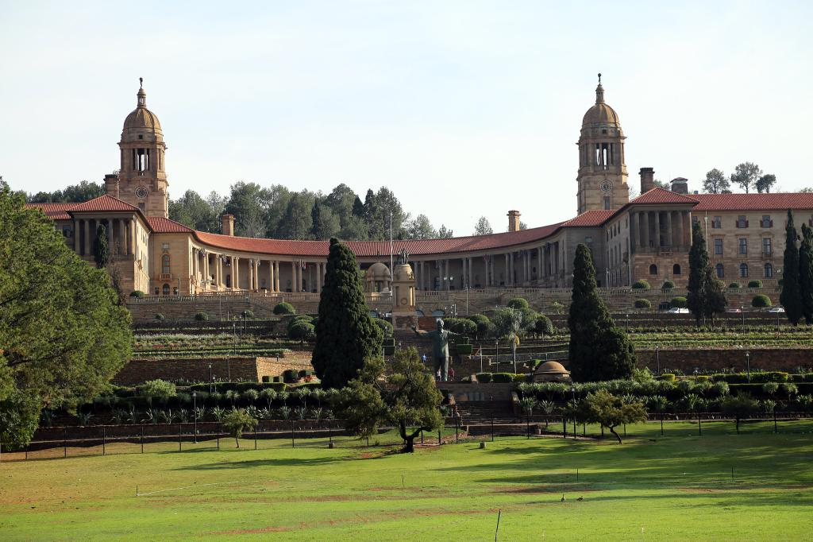

Welcome to Pretoria & Government Buildings
Pretoria, South Africa’s administrative capital, is known for its elegant architecture and historical landmarks. The Union Buildings, overlooking the city, are a must-see and represent the heart of government.
Other attractions include the Voortrekker Monument, cultural museums, and beautifully maintained gardens. Pretoria is also famous for its jacaranda-lined streets, especially when the trees bloom in spring.